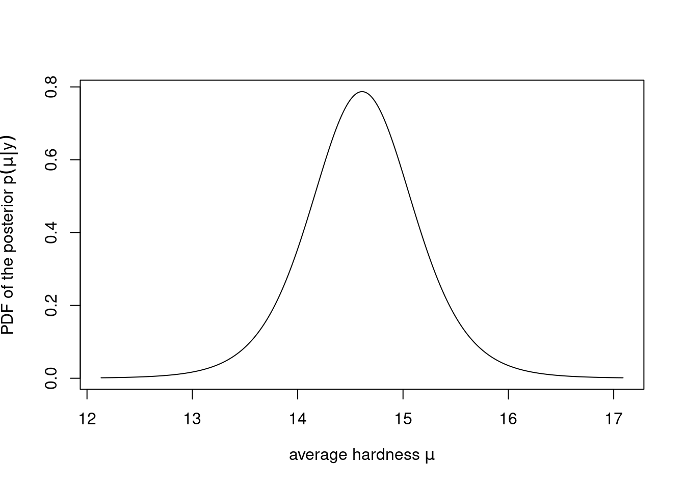
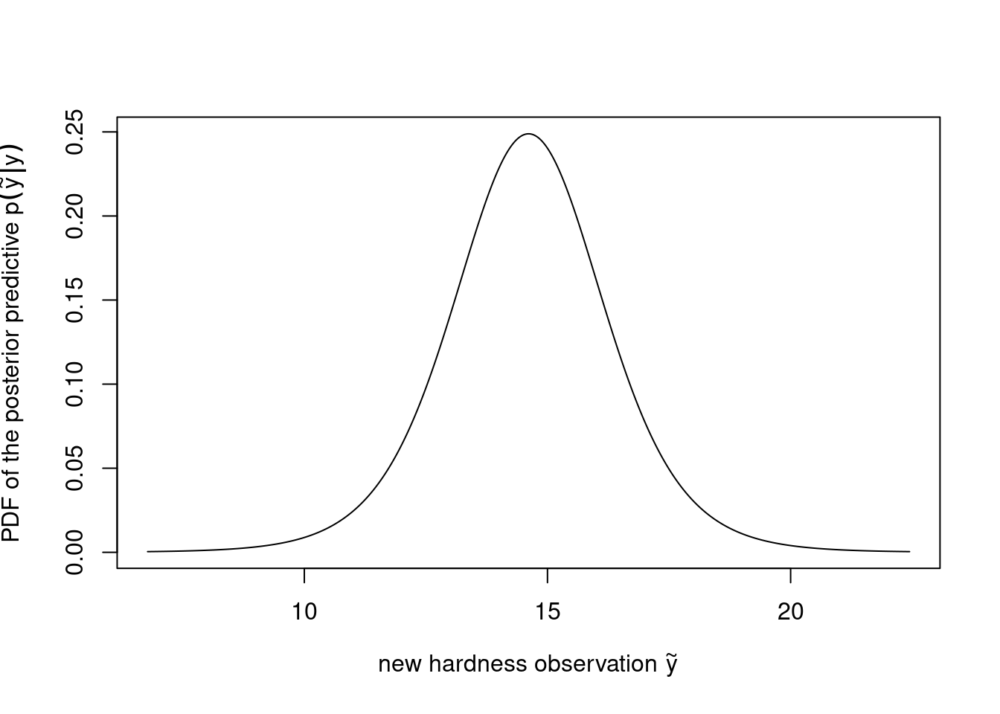

This assignment is related to Lecture 3 and BDA3 Chapters 2 and 3. Use Frank Harrell’s recommendations on how to state results in Bayesian two group comparisons (and note that there is no point null hypothesis testing in this assignment).
The maximum amount of points from this assignment is 9.
We have prepared two quarto templates specific to this assignment to help you get started:
A recommended template (html, qmd, pdf) which uses some additional packages, which however requires a bit more set-up work to run and
a simple template (html, qmd, pdf) which doesn’t use those additional packages and is therefore easier to get to run.
The grading will be done in peergrade. All grading questions and evaluations for this assignment are contained within this document in the collapsible Rubric blocks.
Further information
The recommended tool in this course is R (with the IDE RStudio).
If you want to install R and RStudio locally, download R and RStudio.
There are tons of tutorials, videos and introductions to R and RStudio online. You can find some initial hints from RStudio Education pages.
When working with R, we recommend writing the report using quarto and the provided template. The template includes the formatting instructions and how to include code and figures.
Instead of quarto, you can use other software to make the PDF report, but the the same instructions for formatting should be used.
Report all results in a single, anonymous *.pdf -file and submit it in peergrade.io.
The course has its own R package aaltobda with data and functionality to simplify coding. The package is pre-installed in JupyterHub. To install the package on your own system, run the following code (upgrade="never" skips question about updating other packages):
Many of the exercises can be checked automatically using the R package markmyassignment (pre-installed in JupyterHub). Information on how to install and use the package can be found in the markmyassignment documentation. There is no need to include markmyassignment results in the report.
Recommended additional self study exercises for each chapter in BDA3 are listed in the course web page. These will help to gain deeper understanding of the topic.
Deadlines for all assignments can be found on the course web page and in Peergrade. You can set email alerts for the deadlines in Peergrade settings.
You are allowed to discuss assignments with your friends, but it is not allowed to copy solutions directly from other students or from internet.
You can copy, e.g., plotting code from the course demos, but really try to solve the actual assignment problems with your own code and explanations.
Do not share your answers publicly.
Do not copy answers from the internet or from previous years. We compare the answers to the answers from previous years and to the answers from other students this year.
Do not submit empty PDFs, almost empty PDFs, copy of the questions, nonsense generated by yourself or AI, as these are just harming the other students as they can’t do peergrading for the empty or nonsense submissions. Violations of this rule will be reported and investigated in the same way was plagiarism.
If you have any suggestions or improvements to the course material, please post in the course chat feedback channel, create an issue, or submit a pull request to the public repository!
Rubric
Can you open the PDF and it’s not blank nor nonsense? If the pdf is blank, nonsense, or something like only a copy of the questions, 1) report it as problematic in Peergrade-interface to get another report to review, and 2) send a message to TAs.
Is the report anonymous?
Setup
This is the template for assignment 3. You can download qmd-files (full, simple) or copy the code from this rendered document after clicking on </> Code in the top right corner.
Please replace the instructions in this template by your own text, explaining what you are doing in each exercise.
The following will set-up markmyassignment to check your functions at the end of the notebook:
2 Inference for normal mean and deviation (3 points)
A factory has a production line for manufacturing car windshields. A sample of windshields has been taken for testing hardness. The observed hardness values \(\mathbf{y}_1\) can be found in the dataset windshieldy1 in the aaltobda package.
We may assume that the observations follow a normal distribution with an unknown standard deviation \(\sigma\). We wish to obtain information about the unknown average hardness \(\mu\). For simplicity we assume standard uninformative prior discussed in the book, that is, \(p(\mu, \sigma) \propto \sigma^{-1}\). It is not necessary to derive the posterior distribution in the report, as it has already been done in the book (see section 3.2).
Loading the library and the data.
data("windshieldy1")# The data are now stored in the variable `windshieldy1`.# The below displays the data:windshieldy1
Compute and report the point estimate \(E(\mu|y)\),
compute and report a posterior 95%-interval,
plot the density, and
write interpretation of the result in text.
Tip
Posterior intervals are also called credible intervals and are different from confidence intervals.
Write your answers and code here!
Keep the below name and format for the functions to work with markmyassignment:
# Useful functions: mean(), length(), sqrt(), sum()# and qtnew(), dtnew() (from aaltobda)mu_point_est <-function(data) {# Do computation here, and return as below.# This is the correct return value for the test data provided above.14.5### {.content-hidden when-profile="public"}mean(data)###}mu_interval <-function(data, prob =0.95) {# Do computation here, and return as below.# This is the correct return value for the test data provided above.c(13.3, 15.7)### {.content-hidden when-profile="public"} n =length(data) df = n-1 location =mean(data) scale =sqrt((1/(n-1) *sum((data-location)^2) )/n) ql = (1-prob)/2 qu = prob + (1-prob)/2qtnew(c(ql, qu), df, location, scale)###}
You can plot the density as below if you implement mu_pdf to compute the PDF of the posterior \(p(\mu|y)\) of the average hardness \(\mu\).
mu_pdf <-function(data, x){# Compute necessary parameters here.# These are the correct parameters for `windshieldy_test`# with the provided uninformative prior. df =3 location =14.5 scale =0.3817557# Use the computed parameters as below to compute the PDF:### {.content-hidden when-profile="public"} n =length(data) df = n-1 location =mean(data) scale =sqrt((1/(n-1) *sum((data-location)^2) )/n)###dtnew(x, df, location, scale)}x_interval =mu_interval(windshieldy1, .999)lower_x = x_interval[1]upper_x = x_interval[2]x =seq(lower_x, upper_x, length.out=1000)plot( x, mu_pdf(windshieldy1, x), type="l",xlab=TeX(r'(average hardness $\mu$)'),ylab=TeX(r'(PDF of the posterior $p(\mu|y)$)'))

Figure 1: PDF of the posterior \(p(\mu|y)\) of the average hardness \(\mu\)
Subtask 2.c)
What can you say about the hardness of the next windshield coming from the production line before actually measuring the hardness?
Compute and report the point estimate \(E(\tilde{y}|y)\),
compute and report a posterior predictive 95%-interval,
plot the density, and
write interpretation of the result in text.
Tip
Predictive intervals are different from posterior intervals.
With a conjugate prior a closed form posterior is Student’s \(t\) form (see equations in the book).
Write your answers and code here!
Keep the below name and format for the functions to work with markmyassignment:
# Useful functions: mean(), length(), sqrt(), sum()# and qtnew(), dtnew() (from aaltobda)mu_pred_point_est <-function(data) {# Do computation here, and return as below.# This is the correct return value for the test data provided above.14.5### {.content-hidden when-profile="public"}mean(data)###}mu_pred_interval <-function(data, prob =0.95) {# Do computation here, and return as below.# This is the correct return value for the test data provided above.c(11.8, 17.2)### {.content-hidden when-profile="public"} n =length(data) df = n-1 location =mean(data) scale =sqrt((1/(n-1) *sum((data-location)^2) )*(1+1/n)) ql = (1-prob)/2 qu = prob + (1-prob)/2qtnew(c(ql, qu), df, location, scale)###}
You can plot the density as below if you implement mu_pred_pdf to compute the PDF of the posterior predictive \(p(\tilde{y}|y)\) of a new hardness observation \(\tilde{y}\).
mu_pred_pdf <-function(data, x){# Compute necessary parameters here.# These are the correct parameters for `windshieldy_test`# with the provided uninformative prior. df =3 location =14.5 scale =0.8536316# Use the computed parameters as below to compute the PDF:### {.content-hidden when-profile="public"} n =length(data) df = n-1 location =mean(data) scale =sqrt((1/(n-1) *sum((data-mean(data))^2) )*(1+1/n))###dtnew(x, df, location, scale)}x_interval =mu_pred_interval(windshieldy1, .999)lower_x = x_interval[1]upper_x = x_interval[2]x =seq(lower_x, upper_x, length.out=1000)plot( x, mu_pred_pdf(windshieldy1, x), type="l",xlab=TeX(r'(new hardness observation $\tilde{y}$)'),ylab=TeX(r'(PDF of the posterior predictive $p(\tilde{y}|y)$)'))

Figure 2: PDF of the posterior predictive \(p(\tilde{y}|y)\) of a new hardness observation \(\tilde{y}\)
Rubric
Is the source code included?
No
Yes
Are the likelihood, prior and the posterior for computing the average hardness value reported? It is ok to refer to the book instead of deriving the distributions.
No
Yes, but some are missing
Yes
In part a), were the point estimates and posterior interval provided? (The posterior mean should be close to )
No
Yes, but seem incorrect or only one estimate was reported
Yes, and the reported values seem plausible
In part b), was the density plotted?
No
Yes, but seem incorrect
Yes, and the plot seems plausible
For b)-part, was a formula or a simulation method presented for computing the posterior predictive distribution? It is ok to refer to the book.
No
Yes, but seems incorrect
Yes
For c)-part, were the point estimate and predictive interval provided? (95% predictive interval should be around and the mean the same as in a)-part).
No
Yes, but seems incorrect
Yes, and the reported values seem plausible
For c)-part, was the density plotted?
No
Yes, but seems incorrect
Yes, and the plot seem plausible
3 Inference for the difference between proportions (3 points)
An experiment was performed to estimate the effect of beta-blockers on mortality of cardiac patients. A group of patients was randomly assigned to treatment and control groups: out of 674 patients receiving the control, 39 died, and out of 680 receiving the treatment, 22 died. Assume that the outcomes are independent and binomially distributed, with probabilities of death of \(p_0\) and \(p_1\) under the control and treatment, respectively. Set up a noninformative or weakly informative prior distribution on \((p_0,p_1)\).
Subtask 3.a)
Formulate
the likelihood,
the prior, and
the resulting posterior.
Write your answers here!
Subtask 3.b)
Summarize the posterior distribution for the odds ratio, \[
\mathrm{OR} = (p_1/(1-p_1))/(p_0/(1-p_0)).
\]
Compute and report the point estimate \(E(\mathrm{OR}|y_0,y_1)\),
With a conjugate prior, a closed-form posterior is the Beta form for each group separately (see equations in the book). You can use rbeta() to sample from the posterior distributions of \(p_0\) and \(p_1\), and use this sample and odds ratio equation to get a sample from the distribution of the odds ratio.
Keep the below name and format for the functions to work with markmyassignment:
# Useful function: mean(), quantile()posterior_odds_ratio_point_est <-function(p0, p1) {# Do computation here, and return as below.# This is the correct return value for the test data provided above.2.650172### {.content-hidden when-profile="public"} odds_ratios = p1/(1-p1)/(p0/(1-p0))mean(odds_ratios)###}posterior_odds_ratio_interval <-function(p0, p1, prob =0.95) {# Do computation here, and return as below.# This is the correct return value for the test data provided above.c(0.6796942,7.3015964)### {.content-hidden when-profile="public"} odds_ratios = p1/(1-p1)/(p0/(1-p0)) ql = (1-prob)/2 qu = prob + (1-prob)/2quantile(odds_ratios, c(ql, qu))###}
Figure 3: Probabilities of death for the two patient groups.
rvars make it easy to compute functions of random variables, such as
differences, e.g. \(p_0 - p_1\): r0 - r1 computes an rvar which prints as 0.023 ± 0.011, indicating the sample mean and the sample standard deviation of the difference of the probabilities of death,
products, e.g. \(p_0 \, p_1\): r0 * r1 computes an rvar which prints as 0.0018 ± 0.00048 which in this case has no great interpretation, or
the odds ratios needed in task 3.b).
Below, in Figure 4, we compute the odds ratios using the rvars and visualize its median, central intervals and draws, as above in Figure 3:
You can use Figure 4 to visually check whether the answers you computed for 3.b) make sense.
Subtask 3.c)
Use at least two different priors, and discuss the sensitivity of your inference to your choice of prior density with a couple of sentences.
Write your answers and code here!
Rubric
Is the source code included?
No
Yes
Are the likelihood, prior and the posterior for the death probabilities reported? It is ok to refer to the book instead of deriving the distributions.
No
Yes, but some are missing
Yes
In part a), was the simulation algorithm for computing the posterior of the odds ratio presented or implemented?
No
Yes, but seems incorrect
Yes
In part a), was the odds ratio summarized with a point estimate and a posterior interval? (The mean should be close to )
No
Yes, but results seem incorrect
Yes, and the results seem plausible
In part b), was some discussion about testing alternative priors provided? (For example, one could have repeated the computations in a)-part with a couple of alternative priors and reported these results or some related general conclusions briefly)
Not at all
Some analysis was provided but it was lacking or did not make sense
Some alternative priors were tested and some sensible discussion provided
4 Inference for the difference between normal means (3 points)
Consider a case where the same factory has two production lines for manufacturing car windshields. Independent samples from the two production lines were tested for hardness. The hardness measurements for the two samples \(\mathbf{y}_1\) and \(\mathbf{y}_2\) be found in the datasets windshieldy1 and windshieldy2 in the aaltobda package.
We assume that the samples have unknown standard deviations \(\sigma_1\) and \(\sigma_2\). Use uninformative or weakly informative priors and answer the following questions:
Loading the library and the data.
data("windshieldy2")# The new data are now stored in the variable `windshieldy2`.# The below displays the first few rows of the new data:head(windshieldy2)
[1] 15.980 14.206 16.011 17.250 15.993 15.722
Subtask 4.a)
Formulate
the likelihood,
the prior, and
the resulting posterior.
Write your answers here!
Subtask 4.b)
What can you say about \(\mu_d = \mu_1 - \mu_2\)?
Compute and report the point estimate \(E(\mu_d|y_1, y_2)\),
With a conjugate prior, a closed-form posterior is Student’s \(t\) form for each group separately (see equations in the book). You can use the rtnew() function to sample from the posterior distributions of \(\mu_1\) and \(\mu_2\), and use this sample to get a sample from the distribution of the difference \(\mu_d = \mu_1 - \mu_2\).
Given this specific model, what is the probability that the means are exactly the same (\(\mu_1 = \mu_2\))? Explain your reasoning.
Write your answers here!
Rubric
Is source code included?
No
Yes
Are the likelihood, prior and the posterior for the windshield hardness values reported? (It is also ok to refer to the book or related formulas from exercise 1)
No
Yes, but some are missing
Yes
In part a), was the simulation algorithm for computing the difference in the means presented or implemented?
No
Yes, but seems to be incorrect
Yes
In part a), was the posterior for the difference between the means summarized with point and interval estimates? (The mean should be close to or something close to it)
No answer
Yes, but results seem incorrect or only one estimate was given
Yes, and results seem reasonable
Were some analysis or discussion provided for assessing whether the means could be the same?
No analysis or explanation is given
Yes, but the analysis or explanation seems incorrect
Yes, and the analysis or explanation seems plausible
markmyassignment
The following will check the functions for which markmyassignment has been set up:
mark_my_assignment()
Error: No assignment has been set. Please use set_assignment().
5 Overall quality of the report
Rubric
Does the report include comment on whether AI was used, and if AI was used, explanation on how it was used?
No
Yes
Does the report follow the formatting instructions?
Not at all
Little
Mostly
Yes
In case the report doesn’t fully follow the general and formatting instructions, specify the instructions that have not been followed. If applicable, specify the page of the report, where this difference is visible. This will help the other student to improve their reports so that they are easier to read and review. If applicable, specify the page of the report, where this difference in formatting is visible.
Please also provide feedback on the presentation (e.g. text, layout, flow of the responses, figures, figure captions). Part of the course is practicing making data analysis reports. By providing feedback on the report presentation, other students can learn what they can improve or what they already did well. You should be able to provide constructive or positive feedback for all non-empty and non-nonsense reports. If you think the report is perfect, and you can’t come up with any suggestions how to improve, you can provide feedback on what you liked and why you think some part of the report is better than yours.
Source Code
---title: "Assignment 3, 2023"author: "Aki Vehtari et al."format: html: toc: true code-tools: true code-line-numbers: true number-sections: true mainfont: Georgia, serif page-layout: article pdf: geometry: - left=1cm,top=1cm,bottom=1cm,right=7cm number-sections: true code-annotations: noneeditor: source---# General information**This is for BDA 2023**This assignment is related to Lecture 3 and BDA3 Chapters 2 and 3. Use [Frank Harrell'srecommendations](https://hbiostat.org/blog/post/bayes-freq-stmts/) onhow to state results in Bayesian two group comparisons (and note thatthere is no *point null hypothesis testing* in this assignment).**The maximum amount of points from this assignment is 9.**We have prepared **two quarto templates specific to this assignment** to help you get started:- A recommended template ([html](template3.html), [qmd](https://avehtari.github.io/BDA_course_Aalto/assignments/template3.qmd), [pdf](template3.pdf)) which uses some additional packages,which however requires a bit more set-up work to run and- a simple template ([html](simple_template3.html), [qmd](https://avehtari.github.io/BDA_course_Aalto/assignments/simple_template3.qmd), [pdf](simple_template3.pdf)) which doesn't use those additional packages andis therefore easier to get to run.::: {.callout-tip collapse=false}**Reading instructions:**- [**The reading instructions for BDA3 Chapter 1**](../BDA3_notes.html#ch2).- [**The reading instructions for BDA3 Chapter 2**](../BDA3_notes.html#ch3).{{< include includes/_grading_instructions.md >}}:::{{< include includes/_general_info.md >}}::: {.callout-warning collapse=false}## SetupThis is the template for [assignment 3](assignment3.html). You can download qmd-files ([full](https://avehtari.github.io/BDA_course_Aalto/assignments/template3.qmd), [simple](https://avehtari.github.io/BDA_course_Aalto/assignments/simple_template3.qmd)) or copy the code from this rendered document after clicking on `</> Code` in the top right corner.**Please replace the instructions in this template by your own text, explaining what you are doing in each exercise.**The following will set-up [`markmyassignment`](https://github.com/MansMeg/markmyassignment) to check your functions at the end of the notebook:```{r}if(!require(markmyassignment)){install.packages("markmyassignment")library(markmyassignment)}assignment_path =paste("https://github.com/avehtari/BDA_course_Aalto/","blob/master/assignments/tests/assignment3.yml", sep="")set_assignment(assignment_path)```The following installs and loads the `aaltobda` package:```{r}if(!require(aaltobda)){install.packages("aaltobda", repos =c("https://avehtari.github.io/BDA_course_Aalto/", getOption("repos")))library(aaltobda)}```The following installs and loads the [`latex2exp` package](https://github.com/stefano-meschiari/latex2exp), which allows us to use LaTeX in plots:```{r}if(!require(latex2exp)){install.packages("latex2exp")library(latex2exp)}```:::::: {.callout-tip collapse=true}## Setting up advanced packages (`posterior` and `ggdist`)The following installs and loads the [`posterior` package](https://mc-stan.org/posterior/index.html),which allows us to use its [`rvar` Random Variable Datatype](https://mc-stan.org/posterior/articles/rvar.html):```{r}if(!require(posterior)){install.packages("posterior")library(posterior)}```The following installs and loads the [`ggdist` package](https://mjskay.github.io/ggdist/)for advanced plotting functions:```{r}if(!require(ggplot2)){install.packages("ggplot2")library(ggplot2)}ggplot2::theme_set(theme_minimal(base_size =14))if(!require(ggdist)){install.packages("ggdist")library(ggdist)}```:::# Inference for normal mean and deviation (3 points)A factory has a production line for manufacturing car windshields. Asample of windshields has been taken for testing hardness.The observed hardness values $\mathbf{y}_1$ can be found inthe dataset `windshieldy1` in the `aaltobda` package.We may assume that the observations follow a normal distribution with anunknown standard deviation $\sigma$. We wish to obtain information aboutthe unknown average hardness $\mu$. For simplicity we assume standarduninformative prior discussed in the book, that is,$p(\mu, \sigma) \propto \sigma^{-1}$. It is not necessary to derive theposterior distribution in the report, as it has already been done in thebook (see section 3.2).::: {.content-visible when-profile="public"}Loading the library and the data.``` {r}data("windshieldy1")# The data are now stored in the variable `windshieldy1`.# The below displays the data:windshieldy1```The below data is **only for the tests**, you need to change to thefull data `windshieldy1` when reporting your results.``` {r}windshieldy_test <- c(13.357, 14.928, 14.896, 14.820)```:::::: {.callout-warning icon=false title="Subtask 2.a)"}Formulate1. the likelihood,2. the prior, and3. the resulting posterior.:::::: {.content-visible when-profile="public"}Write your answers here!:::::: {.callout-warning icon=false title="Subtask 2.b)"}What can you say about the unknown $\mu$?* Compute and report the point estimate $E(\mu|y)$,* compute and report a posterior 95%-interval,* plot the density, and* write interpretation of the result in text.:::::: {.callout-tip collapse=false}Posterior intervals are also called credibleintervals and are different from confidence intervals.:::::: {.content-visible when-profile="public"}Write your answers and code here!**Keep the below name and format for the functions to work with `markmyassignment`:**```{r}# Useful functions: mean(), length(), sqrt(), sum()# and qtnew(), dtnew() (from aaltobda)mu_point_est <-function(data) {# Do computation here, and return as below.# This is the correct return value for the test data provided above.14.5### {.content-hidden when-profile="public"}mean(data)###}mu_interval <-function(data, prob =0.95) {# Do computation here, and return as below.# This is the correct return value for the test data provided above.c(13.3, 15.7)### {.content-hidden when-profile="public"} n =length(data) df = n-1 location =mean(data) scale =sqrt((1/(n-1) *sum((data-location)^2) )/n) ql = (1-prob)/2 qu = prob + (1-prob)/2qtnew(c(ql, qu), df, location, scale)###}```You can plot the density as below if you implement `mu_pdf` to compute the PDF of the posterior $p(\mu|y)$ of the average hardness $\mu$.```{r}#| label: fig-2b-density#| fig-cap: PDF of the posterior $p(\mu|y)$ of the average hardness $\mu$mu_pdf <-function(data, x){# Compute necessary parameters here.# These are the correct parameters for `windshieldy_test`# with the provided uninformative prior. df =3 location =14.5 scale =0.3817557# Use the computed parameters as below to compute the PDF:### {.content-hidden when-profile="public"} n =length(data) df = n-1 location =mean(data) scale =sqrt((1/(n-1) *sum((data-location)^2) )/n)###dtnew(x, df, location, scale)}x_interval =mu_interval(windshieldy1, .999)lower_x = x_interval[1]upper_x = x_interval[2]x =seq(lower_x, upper_x, length.out=1000)plot( x, mu_pdf(windshieldy1, x), type="l",xlab=TeX(r'(average hardness $\mu$)'),ylab=TeX(r'(PDF of the posterior $p(\mu|y)$)'))```:::::: {.callout-warning icon=false title="Subtask 2.c)"}What can you say about the hardness of the next windshield comingfrom the production line before actually measuring the hardness?* Compute and report the point estimate $E(\tilde{y}|y)$,* compute and report a posterior **predictive** 95%-interval,* plot the density, and* write interpretation of the result in text.:::::: {.callout-tip collapse=false}Predictive intervals are different from posteriorintervals.With a conjugate prior a closed form posterior is Student's $t$form (see equations in the book).:::::: {.content-visible when-profile="public"}Write your answers and code here!**Keep the below name and format for the functions to work with `markmyassignment`:**```{r}# Useful functions: mean(), length(), sqrt(), sum()# and qtnew(), dtnew() (from aaltobda)mu_pred_point_est <-function(data) {# Do computation here, and return as below.# This is the correct return value for the test data provided above.14.5### {.content-hidden when-profile="public"}mean(data)###}mu_pred_interval <-function(data, prob =0.95) {# Do computation here, and return as below.# This is the correct return value for the test data provided above.c(11.8, 17.2)### {.content-hidden when-profile="public"} n =length(data) df = n-1 location =mean(data) scale =sqrt((1/(n-1) *sum((data-location)^2) )*(1+1/n)) ql = (1-prob)/2 qu = prob + (1-prob)/2qtnew(c(ql, qu), df, location, scale)###}```You can plot the density as below if you implement `mu_pred_pdf` to compute the PDF of the posterior predictive $p(\tilde{y}|y)$ of a new hardness observation $\tilde{y}$.```{r}#| label: fig-2c-density#| fig-cap: PDF of the posterior predictive $p(\tilde{y}|y)$ of a new hardness observation $\tilde{y}$mu_pred_pdf <-function(data, x){# Compute necessary parameters here.# These are the correct parameters for `windshieldy_test`# with the provided uninformative prior. df =3 location =14.5 scale =0.8536316# Use the computed parameters as below to compute the PDF:### {.content-hidden when-profile="public"} n =length(data) df = n-1 location =mean(data) scale =sqrt((1/(n-1) *sum((data-mean(data))^2) )*(1+1/n))###dtnew(x, df, location, scale)}x_interval =mu_pred_interval(windshieldy1, .999)lower_x = x_interval[1]upper_x = x_interval[2]x =seq(lower_x, upper_x, length.out=1000)plot( x, mu_pred_pdf(windshieldy1, x), type="l",xlab=TeX(r'(new hardness observation $\tilde{y}$)'),ylab=TeX(r'(PDF of the posterior predictive $p(\tilde{y}|y)$)'))```:::::: {.callout-note icon=false title="Rubric"}* Is the source code included? * No * Yes* Are the likelihood, prior and the posterior for computing the average hardness value reported? It is okto refer to the book instead of deriving the distributions. * No * Yes, but some are missing * Yes* In part a), were the point estimates and posterior interval provided? (The posterior mean should beclose to ) * No * Yes, but seem incorrect or only one estimate was reported * Yes, and the reported values seem plausible* In part b), was the density plotted? * No * Yes, but seem incorrect * Yes, and the plot seems plausible* For b)-part, was a formula or a simulation method presented for computing the posterior predictivedistribution? It is ok to refer to the book. * No * Yes, but seems incorrect * Yes* For c)-part, were the point estimate and predictive interval provided? (95% predictive interval shouldbe around and the mean the same as in a)-part). * No * Yes, but seems incorrect * Yes, and the reported values seem plausible* For c)-part, was the density plotted? * No * Yes, but seems incorrect * Yes, and the plot seem plausible:::# Inference for the difference between proportions (3 points)An experiment was performed to estimate the effect of beta-blockers onmortality of cardiac patients. A group of patients was randomly assignedto treatment and control groups: out of 674 patients receiving thecontrol, 39 died, and out of 680 receiving the treatment, 22 died.Assume that the outcomes are independent and binomially distributed,with probabilities of death of $p_0$ and $p_1$ under the control andtreatment, respectively. Set up a noninformative or weakly informativeprior distribution on $(p_0,p_1)$.::: {.callout-warning icon=false title="Subtask 3.a)"}Formulate1. the likelihood,2. the prior, and3. the resulting posterior.:::::: {.content-visible when-profile="public"}Write your answers here!:::::: {.callout-warning icon=false title="Subtask 3.b)"}Summarize the posterior distribution for the [odds ratio](https://en.wikipedia.org/wiki/Odds_ratio),$$\mathrm{OR} = (p_1/(1-p_1))/(p_0/(1-p_0)).$$* Compute and report the point estimate $E(\mathrm{OR}|y_0,y_1)$,* compute and report a posterior 95%-interval,* plot the histogram, and* write interpretation of the result in text.Use [Frank Harrell's recommendations](https://hbiostat.org/blog/post/bayes-freq-stmts/)how to state results in Bayesian two group comparison.:::::: {.callout-tip collapse=false}With a conjugate prior, a closed-form posterior is the Betaform for each group separately (see equations in the book). You can use`rbeta()` to sample from the posterior distributions of $p_0$ and $p_1$,and use this sample and odds ratio equation to get a sample from thedistribution of the odds ratio.:::::: {.content-visible when-profile="public"}Write your answers and code here!The below data is **only for the tests**:``` {r}set.seed(4711)ndraws = 1000p0 = rbeta(ndraws, 5, 95)p1 = rbeta(ndraws, 10, 90)### {.content-hidden when-profile="public"}set.seed(4711)p0 = rbeta(ndraws, 40, 675)p1 = rbeta(ndraws, 23, 681)###```**Keep the below name and format for the functions to work with `markmyassignment`:**```{r}# Useful function: mean(), quantile()posterior_odds_ratio_point_est <-function(p0, p1) {# Do computation here, and return as below.# This is the correct return value for the test data provided above.2.650172### {.content-hidden when-profile="public"} odds_ratios = p1/(1-p1)/(p0/(1-p0))mean(odds_ratios)###}posterior_odds_ratio_interval <-function(p0, p1, prob =0.95) {# Do computation here, and return as below.# This is the correct return value for the test data provided above.c(0.6796942,7.3015964)### {.content-hidden when-profile="public"} odds_ratios = p1/(1-p1)/(p0/(1-p0)) ql = (1-prob)/2 qu = prob + (1-prob)/2quantile(odds_ratios, c(ql, qu))###}```:::::: {.callout-tip collapse=true}## advanced tools (`posterior`'s `rvar`, `ggdist`'s `stat_dotsinterval`)The `posterior` package's random variable datatype `rvar` is a["sample-based representation of random variables"](https://mc-stan.org/posterior/articles/rvar.html#:~:text=sample%2Dbased%20representation%20of%20random%20variables)which makes handling of random samples (of draws) such as the ones contained in the above variables `p0` and `p1` easier.[By default, it prints as the mean and standard deviation of the draws](https://mc-stan.org/posterior/articles/rvar.html#:~:text=The%20default%20display%20of%20an%20rvar%20shows%20the%20mean%20and%20standard%20deviation%20of%20each%20element%20of%20the%20array.), **such that `rvar(p0)` prints as `r rvar(p0)` and `rvar(p1)` prints as `r rvar(p1)`**.The datatype is ["designed to [...] be able to be used inside `data.frame()`s and `tibble()`s, and to be used with distribution visualizations in the ggdist package."](https://mc-stan.org/posterior/articles/rvar.html#:~:text=designed%20to%20interoperate%20with%20vectorized%20distributions%20in%20the%20distributional%20package%2C%20to%20be%20able%20to%20be%20used%20inside%20data.frame()s%20and%20tibble()s%2C%20and%20to%20be%20used%20with%20distribution%20visualizations%20in%20the%20ggdist%20package.)The code below sets up an [R `data.frame()`](https://www.rdocumentation.org/packages/base/versions/3.6.2/topics/data.frame) with the draws in `p0` and `p1` wrapped in an `rvar`, and uses that data frame to visualize the draws using [`ggdist`](https://mjskay.github.io/ggdist/index.html), an R package building on [`ggplot2`](https://ggplot2.tidyverse.org/) and ["designed for both frequentist and Bayesian uncertainty visualization"](https://mjskay.github.io/ggdist/index.html#:~:text=designed%20for%20both%20frequentist%20and%20Bayesian%20uncertainty%20visualization).The below plot, @fig-showcase-probabilities uses `ggdist`'s [`stat_dotsinterval()`](https://mjskay.github.io/ggdist/articles/dotsinterval.html), which by default visualizes* [an `rvar`'s median and central 66% and 95% intervals](https://mjskay.github.io/ggdist/reference/stat_dotsinterval.html#:~:text=point_interval%20%3D%20%22median_qi%22%2C%0A%20%20.width%20%3D%20c(0.66%2C%200.95)%2C) using a black dot and lines of varying thicknesses as when using `ggdist`'s [`stat_pointinterval()`](https://mjskay.github.io/ggdist/reference/stat_pointinterval.html#examples) and* an `rvar`'s draws using grey dots as when using `ggdist`'s [`stat_dots()`](https://mjskay.github.io/ggdist/reference/stat_dots.html#examples):```{r}#| label: fig-showcase-probabilities#| fig-cap: Probabilities of death for the two patient groups.r0 =rvar(p0)r1 =rvar(p1)ggplot(data.frame(rv_name=c("control", "treatment"), rv=c(r0, r1))) +aes(xdist=rv, y=rv_name) +labs(x="probabilities of death", y="patient group") +stat_dotsinterval()````rvar`s make it easy to compute functions of random variables, such as* differences, e.g. $p_0 - p_1$: `r0 - r1` computes an `rvar` which prints as `r r0 - r1`, indicating the **sample mean** and the **sample standard deviation** of the difference of the probabilities of death,* products, e.g. $p_0 \, p_1$: `r0 * r1` computes an `rvar` which prints as `r r0 * r1` which in this casehas no great interpretation, or* the odds ratios needed in task 3.b).Below, in @fig-showcase-odds-ratios, we compute the odds ratios using the `rvar`s and visualize its median, central intervals and draws, as above in @fig-showcase-probabilities:```{r}#| label: fig-showcase-odds-ratios#| fig-cap: Odds ratios of the two patient groups.rodds_ratio = (r1/(1-r1))/(r0/(1-r0))ggplot(data.frame(rv=c(rodds_ratio))) +aes(xdist=rv) +labs(x="odds ratio", y="relative amount of draws") +stat_dotsinterval()```You can use @fig-showcase-odds-ratios to visually check whether the answers you computed for 3.b) make sense.:::::: {.callout-warning icon=false title="Subtask 3.c)"}Use at least two different priors, and discuss the sensitivity ofyour inference to your choice of prior density with a couple ofsentences.:::::: {.content-visible when-profile="public"}Write your answers and code here!:::::: {.callout-note icon=false title="Rubric"}* Is the source code included? * No * Yes* Are the likelihood, prior and the posterior for the death probabilities reported? It is ok to refer to thebook instead of deriving the distributions. * No * Yes, but some are missing * Yes* In part a), was the simulation algorithm for computing the posterior of the odds ratio presented orimplemented? * No * Yes, but seems incorrect * Yes* In part a), was the odds ratio summarized with a point estimate and a posterior interval? (The meanshould be close to ) * No * Yes, but results seem incorrect * Yes, and the results seem plausible* In part b), was some discussion about testing alternative priors provided? (For example, one couldhave repeated the computations in a)-part with a couple of alternative priors and reported theseresults or some related general conclusions briefly) * Not at all * Some analysis was provided but it was lacking or did not make sense * Some alternative priors were tested and some sensible discussion provided:::# Inference for the difference between normal means (3 points)Consider a case where the same factory has two production lines formanufacturing car windshields. Independent samples from the twoproduction lines were tested for hardness. The hardness measurements forthe two samples $\mathbf{y}_1$ and $\mathbf{y}_2$ be found inthe datasets `windshieldy1` and `windshieldy2` in the `aaltobda` package.We assume that the samples have unknown standard deviations $\sigma_1$and $\sigma_2$. Use uninformative or weakly informative priors and answer the followingquestions:::: {.content-visible when-profile="public"}Loading the library and the data.``` {r}data("windshieldy2")# The new data are now stored in the variable `windshieldy2`.# The below displays the first few rows of the new data:head(windshieldy2)```:::::: {.callout-warning icon=false title="Subtask 4.a)"}Formulate1. the likelihood,2. the prior, and3. the resulting posterior.:::::: {.content-visible when-profile="public"}Write your answers here!:::::: {.callout-warning icon=false title="Subtask 4.b)"}What can you say about $\mu_d = \mu_1 - \mu_2$?* Compute and report the point estimate $E(\mu_d|y_1, y_2)$,* compute and report a posterior 95%-interval,* plot the histogram, and* write interpretation of the result in text.Use [Frank Harrell's recommendations](https://hbiostat.org/blog/post/bayes-freq-stmts/)how to state results in Bayesian two group comparison.:::::: {.callout-tip collapse=false}With a conjugate prior, a closed-form posterior is Student's$t$ form for each group separately (see equations in the book). You canuse the `rtnew()` function to sample from the posterior distributions of$\mu_1$ and $\mu_2$, and use this sample to get a sample from thedistribution of the difference $\mu_d = \mu_1 - \mu_2$.:::::: {.content-visible when-profile="public"}Write your answers and code here!```{r}# Useful functions: mean(), length(), sqrt(), sum(),# rtnew() (from aaltobda), quantile() and hist().```:::::: {.callout-warning icon=false title="Subtask 4.c)"}Given this specific model, what is the probability that the meansare exactly the same ($\mu_1 = \mu_2$)? Explain your reasoning.:::::: {.content-visible when-profile="public"}Write your answers here!:::::: {.callout-note icon=false title="Rubric"}* Is source code included? * No * Yes* Are the likelihood, prior and the posterior for the windshield hardness values reported? (It is also ok torefer to the book or related formulas from exercise 1) * No * Yes, but some are missing * Yes* In part a), was the simulation algorithm for computing the difference in the means presented orimplemented? * No * Yes, but seems to be incorrect * Yes* In part a), was the posterior for the difference between the means summarized with point and intervalestimates? (The mean should be close to or somethingclose to it) * No answer * Yes, but results seem incorrect or only one estimate was given * Yes, and results seem reasonable* Were some analysis or discussion provided for assessing whether the means could be the same? * No analysis or explanation is given * Yes, but the analysis or explanation seems incorrect * Yes, and the analysis or explanation seems plausible:::::: {.callout-warning collapse=false}## markmyassignmentThe following will check the functions for which `markmyassignment` has been set up:```{r}mark_my_assignment()```:::{{< include includes/_overall_quality.md >}}